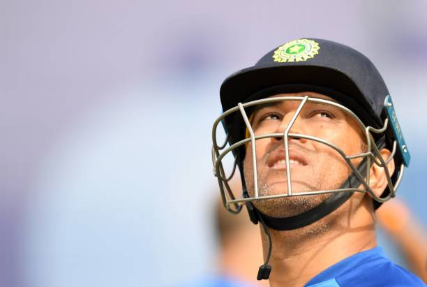

INDIA (2004-2019)
"It's important to learn and not make the same mistakes,
what's done is done."
- 2004:
- Made his One Day International (ODI) debut against Bangladesh.
- Made his One Day International (ODI) debut against Bangladesh.
- 2005:
- Scored his maiden ODI century against Pakistan.
- Became the regular wicketkeeper-batsman for India.
- 2007:
- Led India to victory in the ICC T20 World Cup in South Africa, defeating Pakistan in the final.
- Named the captain of the Indian ODI team.
- 2008:
- Awarded the Rajiv Gandhi Khel Ratna, India's highest sporting honor.
- Named the ICC ODI Player of the Year.
- 2010:
- Led Chennai Super Kings (CSK) to their first IPL title.
- Led CSK to the Champions League T20 title.
- 2011:
- Captained India to victory in the ICC Cricket World Cup held in India, defeating Sri Lanka in the final.
- Received the Padma Bhushan, the third-highest civilian award in India.
- 2013:
- Led India to victory in the ICC Champions Trophy in England, defeating England in the final.
- 2014:
- Announced his retirement from Test cricket after the third Test against Australia in Melbourne.
- 2016:
- Stepped down as the captain of the Indian ODI and T20 teams.
- 2018:
- Led Chennai Super Kings to their third IPL title after making a successful comeback to the tournament.
- 2020:
- Announced his retirement from international cricket on August 15.